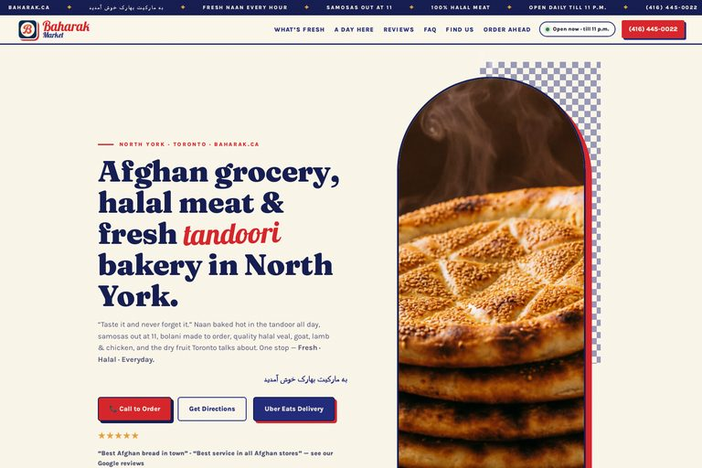

Baharak Market
Website for an Afghan grocery, halal meat counter and tandoori naan bakery in North York

Overview
Baharak Market is an Afghan grocery on Lawrence Avenue East at Victoria Park in North York, with a halal meat counter and a bakery that makes tandoori naan all day. Its website at baharak.ca tells neighbours what is fresh today and makes it easy to visit or pre-order.
What the Site Does
- "What's fresh today" section for the bakery and kitchen items
- A day at Baharak: when the naan, samosas, bolani and mantu come out
- Customer reviews and a questions-we-get-every-day FAQ
- Location with an embedded map, opening details and a click-to-call phone link
- A pre-order call to action for party-size samosa orders
How I Built It
The site is a single, fast-loading page (one index.html) written in plain HTML, CSS and JavaScript, so there is nothing to update or patch on the server. The repository has 6 commits, starting 2026-08-21.
- One HTML file with sections linked from the navigation
- Embedded map and tel: links for one-tap calling
- Structured data written by hand into the page
Hosting and Delivery
The site is static and hosted on GitHub Pages with the client's custom domain. Cloudflare sits in front as the DNS provider and proxy (TLS, caching and DDoS protection on the free plan), and GitHub's Fastly CDN serves the files from its Toronto edge. Every push to the main branch redeploys the site through a GitHub Actions workflow.
Domain Email
No email is configured on this domain yet; customers reach the shop by phone or in person.
Search and AI Discoverability
The page declares 18 products with offers, the shop as a place, and its reviews in schema.org structured data, which helps the shop appear for searches such as fresh naan or halal meat near Victoria Park.
How a Visit Works
- A neighbour searches for Afghan bread or halal meat nearby
- They see what is fresh today and when items come out of the oven
- One tap calls the shop or opens the map to Lawrence Ave E at Victoria Park
What Is Next
- Add a sitemap.xml and llms.txt like the newer client sites
- Set up domain email (routing plus DKIM, SPF and DMARC) if the shop wants a branded address
Frequently Asked Questions
What is the Baharak Market website built with?
A single static HTML, CSS and JavaScript page hosted on GitHub Pages with Cloudflare in front.
Does the site help with local search?
Yes. It includes schema.org product, place and review data and a map, so search engines can match it to local searches.